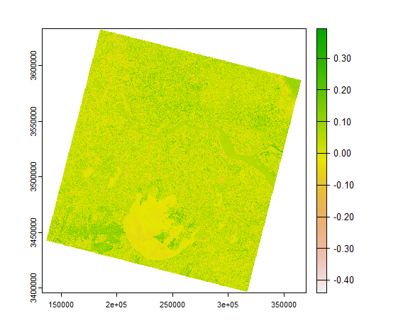

4 Week3: Corrections
4.1 Summary
This week I learned something about the corrections, the corrections can be divided into four aspects, geometric correction, atmospheric correction, orthorectification correction and radiometric calibration.
4.1.1 Geometric correction
Why we need to do the geometric corrections:
- The satellite has view angles when watching the Earth
- The undulating nature of the terrain (topography)
- Wind
- Rotation of Earth
The methods to do the geometric correction:
- Use linear regression model to find the relationship between original points and distorted points
- Based on the linear relationship, it is better to use polynomial algorithms because it allows for a certain amount of curvature, it will be more accurate
- Use Thin Plate Spline algorithms to introduce the local deformations
4.1.2 Atmospheric correction
We need to do the atmospheric correction to reduce the effect from path radiance and the haze created by absorption and scattering to get more accurate image
The methods to do the atmospheric correction:
- Dark object subtraction (DOS), search the darkest value of image and subtract that from each pixel
- Psuedo-invariant features (PIFs) use the linear function to adjust the image
- ACORN, FLAASH, QUAC, ATCOR
4.1.3 Orthorectification correction
The aim of orthorectification correction:
- Provide the coordinates to an image
- Remove the distortions, make pixel viewed at straight down
The methods to do the orthorectification correction:
- Consider the solar zenith angle and solar azimuth angle to do the cosine correction
- The software we can use QGIS, R packages like RStoolbox
4.1.4 Radiometric calibration
The aim of radiometric calibration:
- Convert the digital number sensors captured from the image brightness (without units) to spectral radiance (with units)
Methods to do the radiometric calbration:
- Use converting function
4.2 Application
4.2.1 DOS and radiance
I used the remote sensing image (LC08_L1TP_119038_20230104_20230111_02_T1.txt downloaded from USGS EarthExplorer) to calculate the pixel value of surface reflections generated from scattering by DOS:
install.packages("rgdal")
install.packages("RStoolbox")library(terra)
library(raster)
library(RStoolbox)
library(tidyverse)
library(fs)
library(rgdal)
## Import meta-data and bands based on MTL file
mtlFile <- ("D:\\Remote Sensing\\week3\\LC08_L1TP_119038_20230104_20230111_02_T1\\LC08_L1TP_119038_20230104_20230111_02_T1_MTL.txt")
metaData <- readMeta(mtlFile)
lsatMeta <- stackMeta(metaData)
# surface reflection with DOS
l8_boa_ref <- radCor(lsatMeta, metaData, method = "dos")
# write to local dos
terra::writeRaster(l8_boa_ref, datatype="FLT4S", filename = "D:\\Remote Sensing\\week3\\LC08_L1TP_119038_20230104_20230111_02_T1\\l8_boa_ref.tif", format = "GTiff", overwrite=TRUE)
# Radiance
lsat_rad <- radCor(lsatMeta, metaData = metaData, method = "rad")
terra::writeRaster(lsat_rad, datatype="FLT4S", filename = "D:\\Remote Sensing\\week3\\LC08_L1TP_119038_20230104_20230111_02_T1\\lsat_rad.tif", format = "GTiff", overwrite=TRUE)Conclusion:
There are several methods to execute the atmosphereic corrections (from digital number to reflectance), two typical examples are DOS and converting radiance to reflectance. In this case, the difference between radiance to reflectance and DOS correction is not significant and both can be corrected accurately. Actually, When the atmosphere is thinner or when the weather is good, the influence of the atmosphere on the ground radiation is less, the TOA and BOA are close to each other, a small part of the light reaches the sensor through the path radiance, so the less dark object needs to be substracted, the effect is close to the radiance. On the contrary, the more pixels need to be corrected the more obvious the effect of the corrected image is compared to the pre-correction image.
# hazeDN
hazeDN <- RStoolbox::estimateHaze(lsatMeta, hazeBands = 2:4, darkProp = 0.01, plot = TRUE)
lsat_sref <- radCor(lsatMeta, metaData = metaData, method = "dos",
hazeValues = hazeDN, hazeBands = 2:4)
terra::writeRaster(lsat_sref, datatype="FLT4S", filename = "D:\\Remote Sensing\\week3\\LC08_L1TP_119038_20230104_20230111_02_T1\\lsat_sref.tif", format = "GTiff", overwrite=TRUE)4.2.2 Merging imagery
Landsat8, Landsat9 and data preparation
# List your raster files excluding band 8 using the patter argument
listlandsat_8<-dir_info("D:\\Remote Sensing\\week3\\LC08_L2SP_119038_20230104_20230111_02_T1")%>%
dplyr::filter(str_detect(path, "[B123456790].TIF")) %>%
dplyr::select(path)%>%
pull()%>%
as.character()%>%
# Load our raster layers into a stack
terra::rast()
# List your raster files excluding band 8 using the patter argument
listlandsat_9<-dir_info(
"D:\\Remote Sensing\\week3\\LC08_L2SP_119038_20230104_20230111_02_T1"
)%>%
dplyr::filter(str_detect(path, "[1B23456790].TIF")) %>%
dplyr::select(path)%>%
pull()%>%
as.character()%>%
# Load our raster layers into a stack
terra::rast()
# data preparation
m1 <- terra::mosaic(listlandsat_8, listlandsat_9, fun="mean")4.2.3 Enhancement
Calculate the NDVI (Normalized Difference Vegetation Index)
m1_NDVI <- (m1$LC08_L2SP_119038_20230104_20230111_02_T1_SR_B5 - m1$LC08_L2SP_119038_20230104_20230111_02_T1_SR_B4) / (m1$LC08_L2SP_119038_20230104_20230111_02_T1_SR_B5 + m1$LC08_L2SP_119038_20230104_20230111_02_T1_SR_B4)
m1_NDVI %>%
plot(.)Set m1_NDVI is not greater than 0.2
veg <- m1_NDVI %>%
terra::classify(., cbind(-Inf, 0.2, NA))
veg %>%
plot(.)The highlight area of healthy vegetation: From this map, the vegetation in the Taihu Lake basin is more concentrated to the west of the lake, where the most vegetation is found and where there is less population, while the area north of the lake to the south of the Yangtze River is less vegetated due to the high level of urbanisation, while the area north of the Yangtze River is relatively more vegetated.
Calculate the NDMI (Normalized Difference Moisture Index) Use band 5 and band 6 on the occasion of Landsat8:
\(NDMI = (Band5 - Band6) / (Band5 + Band6)\)
m1_NDMI <- (m1$LC08_L2SP_119038_20230104_20230111_02_T1_SR_B5 - m1$LC08_L2SP_119038_20230104_20230111_02_T1_SR_B6) / (m1$LC08_L2SP_119038_20230104_20230111_02_T1_SR_B5 + m1$LC08_L2SP_119038_20230104_20230111_02_T1_SR_B6)
m1_NDMI %>%
plot(.)

moi <- m1_NDMI %>%
terra::classify(., cbind(-Inf, 0.05, NA))
moi %>%
plot(.)### Filtering
# for a 3 by 3 filter on Band4
m1_filter <- terra::focal(m1$LC08_L2SP_119038_20230104_20230111_02_T1_SR_B4, w=matrix(nrow=3,ncol=3))4.2.4 Texture analysis
Generate the glcm.red and glcm.nir from Band4 and Band5, see the result under different statistical indicators
install.packages("glcm")
library(glcm)
library(raster)
# band4 red, band5 NIR
band4_raster <- raster::raster(m1$LC08_L2SP_119038_20230104_20230111_02_T1_SR_B4)
band5_raster <- raster::raster(m1$LC08_L2SP_119038_20230104_20230111_02_T1_SR_B5)
glcm.red <- glcm(band4_raster,
window = c(7, 7),
#shift=list(c(0,1), c(1,1), c(1,0), c(1,-1)),
statistics = c("mean",
"variance",
"homogeneity",
"contrast",
"entropy",
"dissimilarity",
"second_moment",
"correlation"))
glcm.nir <- glcm(band5_raster,
window = c(7, 7),
#shift=list(c(0,1), c(1,1), c(1,0), c(1,-1)),
statistics = c("mean",
"variance",
"homogeneity",
"contrast",
"entropy",
"dissimilarity",
"second_moment",
"correlation"))
plot(glcm.red)plot(glcm.nir)4.2.5 Data fusion and PCA
# for the next step of PCA we need to keep this in a raster format
# m1_raster, glcm.red
m1_raster <- stack(m1)
Fuse <- stack(m1_raster, glcm.red)
Fuse_3_bands <- stack(Fuse$LC08_L2SP_119038_20230104_20230111_02_T1_SR_B4, Fuse$LC08_L2SP_119038_20230104_20230111_02_T1_SR_B5, Fuse$glcm_homogeneity)
scale_fuse <- scale(Fuse_3_bands)
# m1_raster, glcm.red
pca <- rasterPCA(Fuse, nSamples =100, spca = TRUE)
summary(pca$model)
It can be seen that in my study area, the component 1 accounts for 54.20%, and the summary of component 1 to component 3 accounts for over 90%, component 1 can explain the 54.2% data from entire dataset
plot(pca$map)
# glcm.red, glcm.nir
Fuse <- scale(stack(glcm.red, glcm.nir))
pca <- rasterPCA(Fuse, nSamples = 100, spca = TRUE)
summary(pca$model)The component 1 of glcm.red and glcm.nir is 36.63%, the result is not so good
plot(pca$map)
4.3 Reflection
In this week, I learned the knowledge about the corrections, and the methods about corrections, the distortion of the images from remote sensing is mainly due to the presence of sensor observations in terms of declination, topography, wind and so on. Their correction uses statistical knowledge and principles (such as PCA, linear regression) as well as knowledge of spatial geometry.
I think it is useful for the further study and work, for example, correcting the satellite image to satisfy people’s demand.